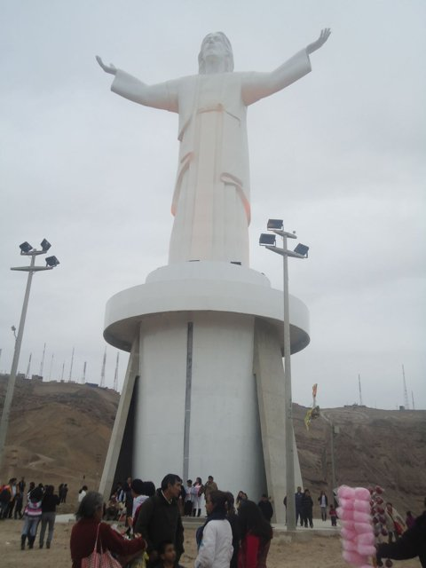

Travel South : photos et récits
En 2011, j’ai photographié les constructions de pierre du Pérou et de la Bolivie. En 2014, mon appareil a enregistré des crânes dans des musées péruviens, et sur une photo je tiens un crâne que la collection appelle Starchild 2. En février 2024, j’ai photographié au Caire des têtes de pierre de l’époque amarnienne. Ces images donnent à ce site sa question : qu’a enregistré mon appareil, que peut en dire la recherche, et à quel genre de monde les formes font-elles penser ?
Starchild 2 est un nom donné par la collection. Il est emprunté à un autre crâne, connu au Mexique, que Lloyd Pye a fait connaître du public. Cette galerie distingue les deux crânes.
Chronologie
- Août 2011 Un voyage de Lima à Lima en passant par Nazca, le lac Titicaca, la Bolivie et Cusco : 15 destinations, photos et vidéos.
- 30 oct. – 1er nov. 2014 Photos de crânes et vidéos de musée au Pérou.
- 15 févr. 2024 Têtes de pierre de l’époque amarnienne au Musée égyptien du Caire.
- 2026 Organisation du matériel, vérification des sources et illustrations IA de la ville de pierre.
Récit de voyage 2011–2024
Note de Jani : mes propres expériences, pas des résultats de recherche. Les dates viennent de l’horodatage des vidéos.
L’itinéraire m’a été montré par Gianina. L D’après son nom de famille inca, elle appartenait à une ancienne lignée de souverains incas. Le nom ne figure pas dans ses papiers, et elle ne le disait pas aux inconnus. On m’a dit qu’en général on n’est pas fier d’un nom de famille inca, parce qu’on se fait taquiner en « princesse inca ».
Nous nous sommes rencontrés en ligne, sur la communauté de voyageurs WAYN. Nous avions trois semaines et trois pays : le Pérou, la Bolivie et le Chili. Nous nous sommes déplacés en avion, en bus et en taxi. Nous bougions tellement que nous passions les nuits dans des bus et chaque jour dans un nouvel endroit. Le programme était serré ; beaucoup d’endroits auraient mérité des jours.
Partout où nous allions, Gianina admirait le paysage et demandait une photo d’elle avec le paysage en arrière-plan. Je suis ingénieur, et dans mon métier ce sont l’étanchéité et les ajustements qui comptent. C’est pourquoi je restais souvent à fixer les joints, pas le paysage. Gianina lisait les gens aussi attentivement que je lisais la pierre : elle repérait les arnaques et les dangers avant moi. Un léger mal de tête m’a accompagné tout le temps au-dessus de 4 000 mètres.
Un soir à Callao
Au début du voyage, nous étions à Callao, le quartier portuaire de Lima. Nous avons rendu visite à un ami de Gianina, et une bande de rue s’est mise à nous suivre. Sur le conseil de Gianina, nous avons entrepris de faire le tour d’un immeuble et, à mi-chemin, nous avons fait demi-tour. Il n’y avait personne en vue dans la rue. Depuis la fenêtre du taxi, nous avons vu un grand groupe de garçons arriver et pointer le doigt dans notre direction. Si nous avions continué dans le même sens, ils seraient arrivés face à nous.
C’est mon expérience d’une soirée, pas un jugement sur tout le quartier.
Le voyage d’après les dates des vidéos
- 29–31 juil. 2011 Lima : le voyage commence. 31 juillet : la vallée de Pisco, la bande de trous du Monte Sierpe (Band of Holes).
- 1er–3 août Huacachina et Paracas. →
- 5 août Nazca : survol des lignes à 10 h 52 ; Cantalloc, Chauchilla et Cahuachi le même jour. →
- 6–8 août Arequipa, puis le bus de nuit pour Puno. →
- 8–10 août Sillustani, le lac Titicaca, Chucuito et Aramu Muru. →
- 10 août La frontière, Tiwanaku et le taxi vers La Paz. →
- 11–12 août Samaipata. →
- 14 août Salar d’Uyuni et Isla Incahuasi. →
- 15–16 août La frontière entre la Bolivie et le Chili.
- 17–19 août En bus jusqu’à Cusco ; Cusco et Sacsayhuamán. →
- 20–21 août Pisac, Ollantaytambo et Machu Picchu. →
- 24–25 août Callao, le quartier portuaire de Lima.
Trois personnes, trois portes
Gianina m’a montré l’itinéraire en 2011. Carmen, une avocate qui parlait avec fierté de sa famille inca, m’a ouvert la porte de la collection de crânes à Paracas en 2014. Julie, ma compagne et ancienne organisatrice de voyages originaire des Philippines, a prolongé le voyage en 2024. Je n’utilise que leurs prénoms.
A En 1549, les gens du pays ont ri quand Cieza de León a demandé si les Incas avaient construit Tiwanaku (Crónica del Perú, partie I, chapitre CV). En 2011, ces mêmes pierres m’ont été montrées par une descendante d’une famille inca.
Ce que je ne pouvais pas encore savoir
- T La datation de Puma Punku a été précisée en 2023 : la construction a commencé vers 580 apr. J.-C., les dernières pierres extraites et taillées datent d’environ 630 et les travaux ont pris fin vers 710 apr. J.-C. (Marsh et al. 2023).
- T En 2024, une prospection assistée par l’IA a mis au jour 303 nouvelles figures à Nazca (Sakai et al. 2024).
- T En 2025, des chercheurs ont signalé Palaspata, un complexe de temples tiwanaku situé à environ 215 km au sud-est de Tiwanaku (Capriles et al. 2025).
Hier et aujourd’hui
Avant le voyage, je jugeais possible que des joints comme ceux de Puma Punku et de Sacsayhuamán ne puissent pas être faits avec des outils de pierre. Aujourd’hui : les bâtisseurs étaient les Tiwanaku et les Incas, mais la vitesse du travail et les outils restent une bonne question.
La photo la plus importante pour moi est la photo 04, Starchild 2 entre mes mains. C’est le seul moment où je n’ai pas regardé l’histoire à travers une vitre.
Où retournerais-je ? À Puma Punku, avec ce que l’on sait aujourd’hui. Il serait intéressant de refaire le tour de tous les chantiers de fouilles actifs, vingt ans plus tard.
Épilogue
Des années plus tard, Gianina m’a proposé 500 hectares de forêt amazonienne pour 100 000 euros. Les anciens de la famille n’avaient plus la force de parcourir et de marquer les limites de leur terre. Je me suis dit que, même si un hectare de forêt tropicale nourrit un petit village, l’endroit était si loin que je ne profiterais jamais de cette terre, et qu’une terre où personne ne va serait perdue au profit des habitants. J’ai poliment refusé.
L’itinéraire a commencé avec une famille dont on ne prononce pas le nom et s’est terminé avec une terre dont plus personne n’avait la force de parcourir les limites.
Photos originales de 2011



Trois itinéraires


Ce que la recherche a établi
- Les lignes de Nazca Une étude publiée en 2024 a trouvé 303 nouvelles figures, en plus des 430 déjà connues. (Sakai et al. 2024)
- Machu Picchu D’après les datations radiocarbone, le site était déjà utilisé vers 1420, plus tôt que ce qu’on déduisait des chroniques. (Burger et al. 2021)
- Puma Punku La construction a commencé vers 580 apr. J.-C. et s’est achevée vers 710 apr. J.-C., des siècles avant les Incas. (Marsh et al. 2023)
- Paracas Sur 159 personnes étudiées provenant des tombes de Cerro Colorado, 98 pour cent avaient un crâne modelé dans l’enfance. (Gómez-Mejía et al. 2022)
- Le Caire et le Pérou Les têtes allongées d’Amarna sont des sculptures ; les crânes du Pérou sont des os. La ressemblance des formes est visuelle, pas une preuve de lien.
Galeries photo : 15 destinations
La côte péruvienne
 Les lignes de NazcaQuels géoglyphes pouvait voir quelqu’un qui suivait le sentier ?
Les lignes de NazcaQuels géoglyphes pouvait voir quelqu’un qui suivait le sentier ? Nécropoles et aqueducs de Nazca : Chauchilla, Cahuachi, CantallocÀ quoi ressemblait la cour en adobe de Cahuachi pour ceux qui la traversaient ?
Nécropoles et aqueducs de Nazca : Chauchilla, Cahuachi, CantallocÀ quoi ressemblait la cour en adobe de Cahuachi pour ceux qui la traversaient ? Paracas et HuacachinaLe désert finit droit dans une mer froide pleine de vie.
Paracas et HuacachinaLe désert finit droit dans une mer froide pleine de vie.Titicaca
 SillustaniUne tour funéraire plus large au sommet qu’à la base.
SillustaniUne tour funéraire plus large au sommet qu’à la base. Puno et le lac TiticacaLes îles des Uros sont tressées en roseau totora et doivent être sans cesse refaites.
Puno et le lac TiticacaLes îles des Uros sont tressées en roseau totora et doivent être sans cesse refaites. Chucuito : Inca UyoDes dizaines de symboles phalliques en pierre dans un petit enclos. Quel âge ont-ils ?
Chucuito : Inca UyoDes dizaines de symboles phalliques en pierre dans un petit enclos. Quel âge ont-ils ? Aramu Muru (Hayu Marca)Une porte taillée dans la roche, sans aucune pièce derrière.
Aramu Muru (Hayu Marca)Une porte taillée dans la roche, sans aucune pièce derrière.Cusco et la Vallée sacrée
 CuscoQui a fait ce joint, et qu’a-t-on construit autour plus tard ?
CuscoQui a fait ce joint, et qu’a-t-on construit autour plus tard ? SacsayhuamánTrois murs en zigzag gravissent la pente au-dessus de Cusco.
SacsayhuamánTrois murs en zigzag gravissent la pente au-dessus de Cusco. Machu PicchuDes paysans du lieu vivaient ici quand Hiram Bingham arriva en 1911.
Machu PicchuDes paysans du lieu vivaient ici quand Hiram Bingham arriva en 1911. © Jani Korpi · CC BY-SA 3.0 · Wikimedia CommonsOllantaytamboDes pierres roses gisent abandonnées le long du chemin venant de la carrière.
© Jani Korpi · CC BY-SA 3.0 · Wikimedia CommonsOllantaytamboDes pierres roses gisent abandonnées le long du chemin venant de la carrière. Pisac et la Vallée sacréeLes terrasses descendent le flanc de la montagne comme des marches géantes.
Pisac et la Vallée sacréeLes terrasses descendent le flanc de la montagne comme des marches géantes.Bolivie


La galerie dans toutes les langues
Ouvrez toute la galerie, avec 15 sites, dans votre langue.